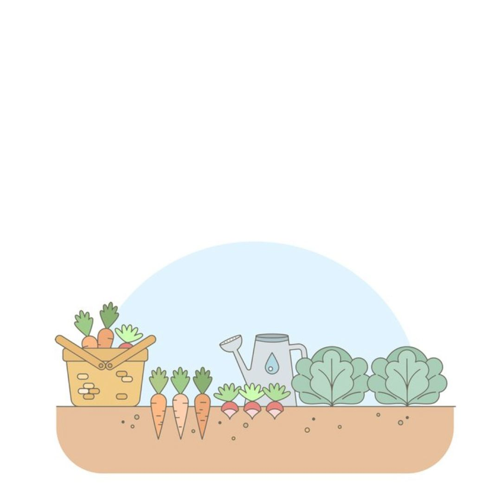

Investindo em Sustentabilidade
As hortas urbanas são mais que um hobby; são uma necessidade para o futuro sustentável das cidades. Conheça os benefícios:
Alimentação Saudável
Com as hortas urbanas, é possível cultivar alimentos frescos e sem agrotóxicos, proporcionando uma dieta mais saudável para você e sua família.
Comunidades Fortalecidas
As hortas urbanas promovem o encontro entre vizinhos, fortalecem o senso de comunidade e criam laços entre os moradores da cidade.
Exemplos de Sucesso
Conheça projetos em grandes cidades que estão mudando o cenário urbano e promovendo a sustentabilidade.